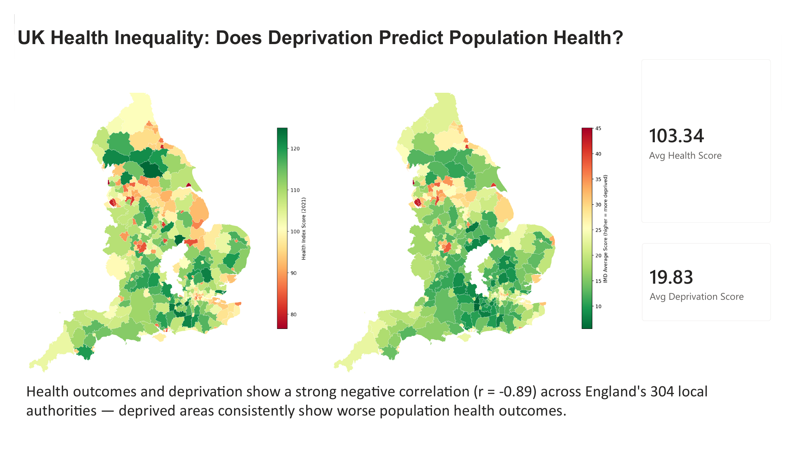
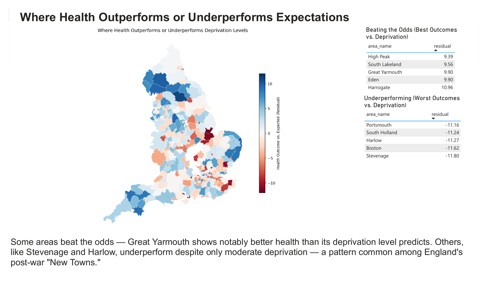

A geospatial and machine learning analysis of health outcomes across 304 English local authorities — testing which type of deprivation most strongly predicts poor health, and stress-testing that answer until it either held up or broke.
UK public health conversations often treat "deprivation" as a single thing — poorer areas have worse health, the story usually stops there. But deprivation is actually seven distinct, only loosely related conditions: income, employment, education, crime, housing barriers, living environment, and pre-existing health burden. I wanted to find out which of these actually drives poor health outcomes the most, using real government data and a properly validated model — not just a single correlation number.
Just as important as the answer was being honest about what the data and models could and couldn't actually prove. A large part of this project ended up being about stress-testing my own first conclusion, finding it didn't hold up, and working out why.
A strong, consistent negative correlation holds across nearly every local authority in England, replicated across all three models tested.
This is the honestly-validated figure, not the single best train/test split, which would have overstated it slightly at R² = 0.845.
Income deprivation is correlated at r=0.94 with employment, r=0.88 with health deprivation, and r=0.75 with education. The model was crediting one variable for work several were doing together.
Ridge Regression, better suited to correlated predictors, gave a stable ranking once employment deprivation (the source of a sign-flip anomaly) was removed.
These towns have only moderate deprivation scores but some of the worst health outcomes relative to prediction in the country — a pattern the data surfaces but doesn't explain.
Great Yarmouth stands out — it has meaningfully higher deprivation than the other top performers, yet still outperforms expectation.
National picture: health outcomes and deprivation mapped side by side across England, with headline averages.

Where actual health outcomes diverge from what deprivation alone would predict — the residual map, plus the specific local authorities beating or missing expectations.

Two official government datasets, matched at local authority level:
Both were filtered to Lower Tier Local Authority (LTLA) level and merged on area code. 304 of 317 English authorities matched cleanly; the remaining 13 were unmatched due to local government boundary mergers between the two datasets' vintages (e.g. Buckinghamshire's four former districts, Northamptonshire's seven), plus standard statistical exclusions for the Isles of Scilly and City of London.
A genuine sequence — each step's result determined the next one.
Baseline correlation & outlier identification. Established r = −0.894 between overall IMD score and 2021 health outcome, then computed residuals against a fitted trend line to surface the local authorities furthest from expectation.
Random Forest on all seven domains. R² = 0.833. Feature importance suggested income deprivation dominated at 84–94% of the model's predictive weight.
Stress-tested that ranking. Checked pairwise correlations between domains and reran the model across five random seeds. The "top predictor" changed nearly every time — not stable enough to report as-is.
Switched to Ridge Regression, which handles correlated predictors more gracefully than tree-based importance. One coefficient (employment) still showed an implausible sign-flip — a symptom of the same correlation issue.
Removed employment, re-ran on six domains. R² barely moved (0.851 → 0.845) and every coefficient corrected to the expected direction — confirming employment wasn't contributing independent signal.
Added Gradient Boosting as a third, independent model (R² = 0.851) — confirming the accuracy ceiling, but reproducing the same tree-based instability in feature ranking, reinforcing that this was a genuine methodological pattern rather than a one-off.
5-fold cross-validation on the final model. R² = 0.831 ± 0.050 across folds — lower than the single best split, and the more honest number to report.
| Model | R² | Notes |
|---|---|---|
| Random Forest (7 domains) | 0.833 | Good fit, but unstable feature importance |
| Ridge (7 domains) | 0.851 | Best raw fit, one sign-flip anomaly |
| Ridge (6 domains, final) | 0.845 | Cleanest, fully interpretable |
| Gradient Boosting (6 domains) | 0.851 | Confirms accuracy, reproduces instability |
| Ridge, 5-fold cross-validated | 0.831 ± 0.050 | Most honest, reported estimate |
By coefficient strength, all pointing the statistically expected (negative) direction:
A geographic pattern worth naming directly: several of the strongest negative outliers — Stevenage, Harlow, and to some extent Boston — are post-war "New Towns," built rapidly under a distinct mid-20th-century planning model. Their health outcomes are meaningfully worse than their moderate deprivation scores would predict, which raises a genuine hypothesis about whether that planning legacy created health-relevant conditions a simple deprivation score doesn't capture. This is a hypothesis the data points to, not a conclusion it proves.
A strong association between deprivation and health doesn't establish which causes which — poverty could drive poor health, poor health could limit earning capacity, or a third factor (e.g. local economic decline) could drive both simultaneously.
Tree-based models (Random Forest, Gradient Boosting) gave meaningfully different "top predictor" rankings depending on random seed, due to multicollinearity between deprivation domains. Reporting a single clean winner would have overstated the certainty of the result.
All data is averaged across entire local authorities, which can mask significant internal variation — a wealthy suburb and a struggling estate in the same district are blended into one number.
The deprivation data (2019) and health data (2015–2021) don't perfectly align in time, and local government boundary changes meant 13 of 317 English authorities couldn't be matched.
Full analysis notebook, cleaned datasets, and the Power BI file are available on request or via GitHub.